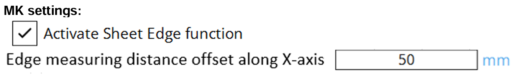
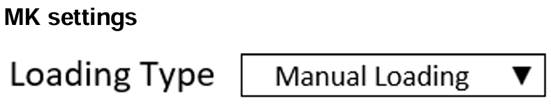
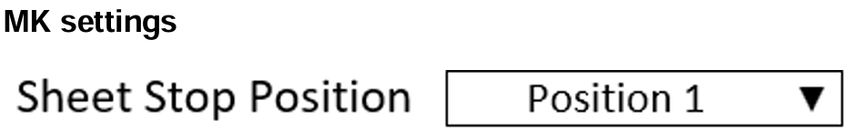

Tafelbeladung
Tafelkantenmessung
Die Funktion Tafelkantenmessung muss angepasst werden, um sowohl den Einzelauftragsmodus als auch den Produktionsplanmodus zu unterstützen.
Einzelauftragsmodus: Aktuellen Arbeitsablauf beibehalten. Positionierung CU → Produktion starten → Popups bestätigen → Tafelkantenmessung starten
Produktionsplanmodus: Es sollte keine Bestätigungsmeldung für weitere Benutzeraktionen erscheinen, d.h. die Tafelkantenmessung wird beim Produktionsstart automatisch ausgeführt.
Keine CU-Positionierung erforderlich → Tafelkantenmessung basierend auf der Tafelanschlagsecke starten und mit dem Messabstandsoffset kombinieren. (Der Abstand kann in den MK-Einstellungen angepasst werden, um bestimmte Sonderfälle abzudecken.)

Beladetyp
Automatisierungskonfiguration
Wenn ein Automatisierungsgerät angeschlossen ist, wird der Produktionsplan durch Automatisierungsschnittstellensignale beeinflusst (z.B. Beladung abgeschlossen, Entladung abgeschlossen…).
Daher muss eine Konfiguration zur Aktivierung/Deaktivierung der Automatisierungskonfiguration bereitgestellt werden. Der Parameter sollte vom Kunden änderbar sein und kann daher auf der Seite Allgemein der Maschinenkonfigurationen abgelegt werden.

Beladetyp:
-
Manuelle Beladung ohne Palettenwechsel - Für den Einzelprogrammbetrieb
-
Manuelle Beladung mit Palettenwechsel - Für den Produktionsplanbetrieb
-
Beladung mit externem Lader - Für den Betrieb mit externem Lader
Tafelanschlagsposition
Definition der Tafelbeladeposition
Der Tafelanschlag für den Rohmaterialstapel im gesamten Maschinenlayout kann in verschiedenen Ecken eingestellt werden. Das Automatisierungsgerät hat die entsprechende Tafelanschlagsecke, wodurch die Tafelbeladeposition in der Maschine ebenfalls beeinflusst wird.

In diesem Fall muss ein Parameter zur Einstellung der Beladeecke vorhanden sein, damit die Steuerung die Tafelkantenmessung entsprechend berechnen kann.
Beim Ausführen eines Einzelprogramms kann die aktuelle Implementierung beibehalten werden. Die Tafelkantenmessung für den Einzelprogrammbetrieb wird nicht beeinflusst.

In der Dropdown-Auswahl stehen 4 Optionen zur Verfügung:
-
Position 1
-
Position 2
-
Position 3
-
Position 4
Nach der Konfiguration wird die Strategie der Tafelkantenmessung im Produktionsplanmodus entsprechend angepasst.